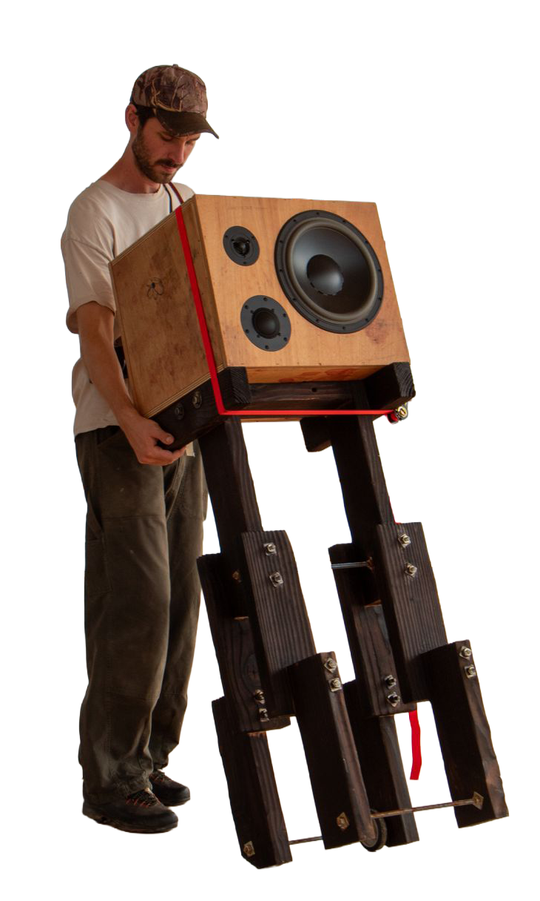

Handmade sound in Rotterdam
soundsystem rental
You can rent our soundsystem or Hi-Fi speakers for a weekend or longer for events, installations and parties. We mostly work with smaller, more intimate events, but have got rooms dancing with up to 200 people. We can deliver the soundsystem, set it up and get it sounding right for your event.
We like to go beyond renting out the soundsystem. We can work with you on the atmosphere, from curating DJs to dressing the space.

bespoke speaker design
We like to experiment with craft processes, materials and form to bring unique design ideas to life without compromising on sound quality. By hand building everything from our atelier in Rotterdam, no CNC’s here, means no two speakers are the same, leaving them alive with the kind of small imperfections that makes music feel human.
We are happy to take on custom orders made to suit your needs, from a single pair of speakers to a full set up for bar or venue.

about
Hello, we are Orse Audio. We’ve been hand-building custom speakers for artist studios, experimental sound installations, institutions, raves and spaces where people gather since 2021.
To us, a speaker is more than just a black box in the corner of a room, its a bridge between artistic curiosity, acoustic expression and people, one that can not only shape how a space looks and sounds but how we feel within them.
Get in touch for a chat or come by the studio to listen to a pair.